Case study · Full app redesign
Rebuilding Campaign Planning App
We took the campaign-planning tool apart and rebuilt it — as the first team trusted to pilot WPP's new company-wide design system — cutting full setup time in half.
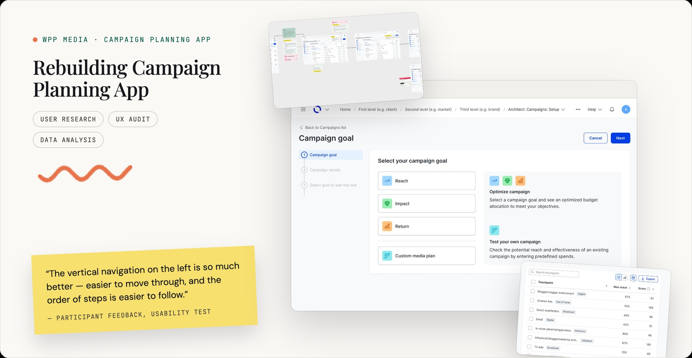
Context & problem
This tool started as one piece of a single media agency's internal software. WPP decided to make it the campaign-planning platform for the whole company — and picked our team to go first with a brand-new, company-wide design system (now WPP Open), ahead of every other team, because of how mature our process already was.
I set the bar above a component swap: fix real pain points, simplify the flow, speed up performance, and add smart defaults wherever the data justified them.
Before → after · drag to compare
A complicated, multi-element navigation became one simplified path — cutting cognitive load and making the entire campaign-setup flow 2× faster, through merged settings, smart defaults, and a backend rebuilt to load only what's needed.
Process
A year-long redesign needs a paper trail, not just good instincts. Here's what I actually did, step by step:
1. Grounded it in data
Pulled backend usage data, past research, and support's most common complaints — before touching a single screen.
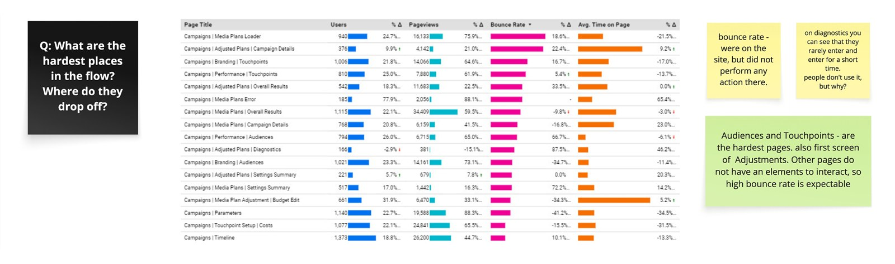
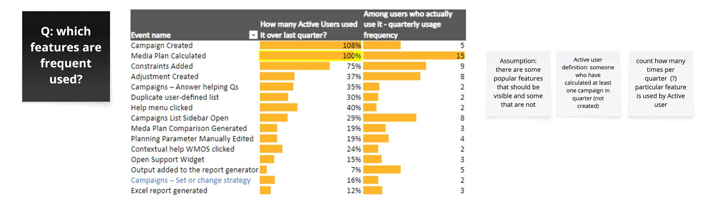
2. Audited the entire flow
Mapped every step and function in the app, then worked with engineering to separate what had to change from what could wait.
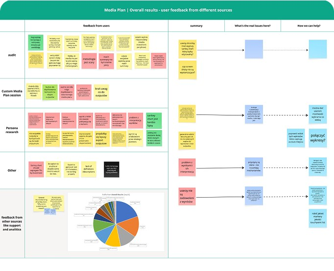
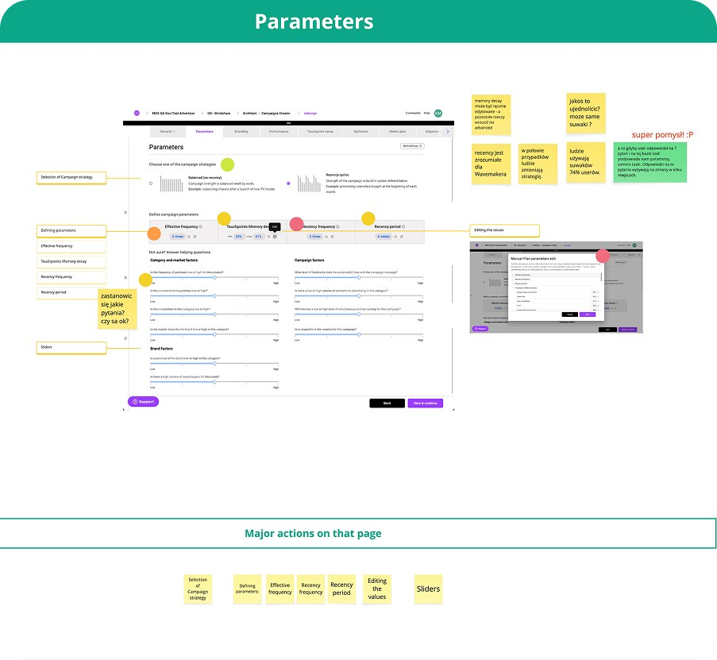
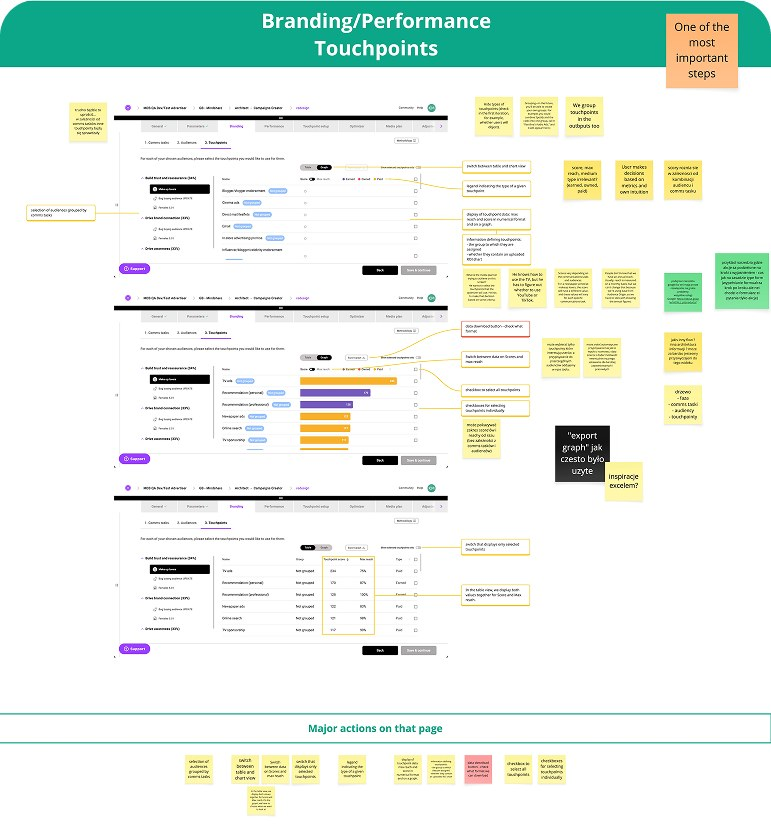
3. Redesigned the flow
Wireframed a reorganized path that merged related settings into smarter steps, then built higher-fidelity mockups of the home screen and full setup.
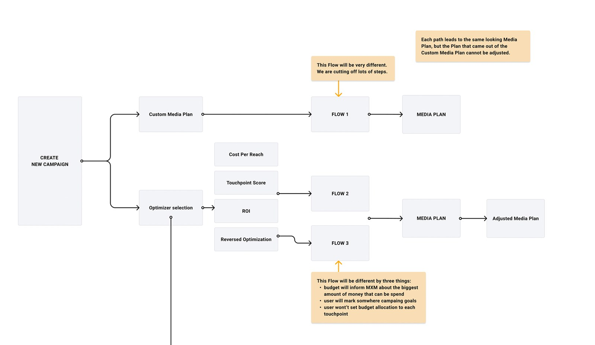
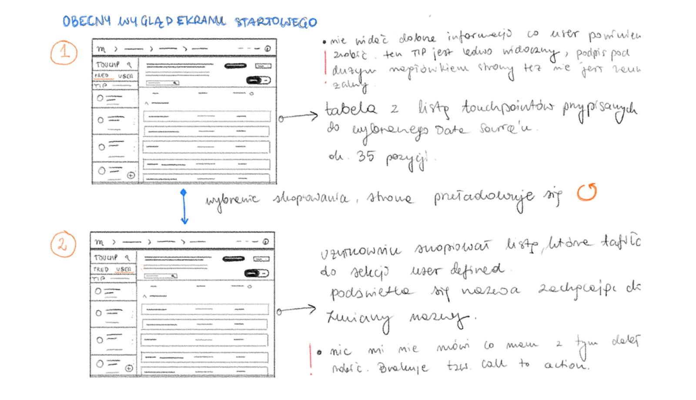
4. Validated with users
Ran in-depth interviews and prototype testing myself, and turned the findings into concrete direction for the next round.
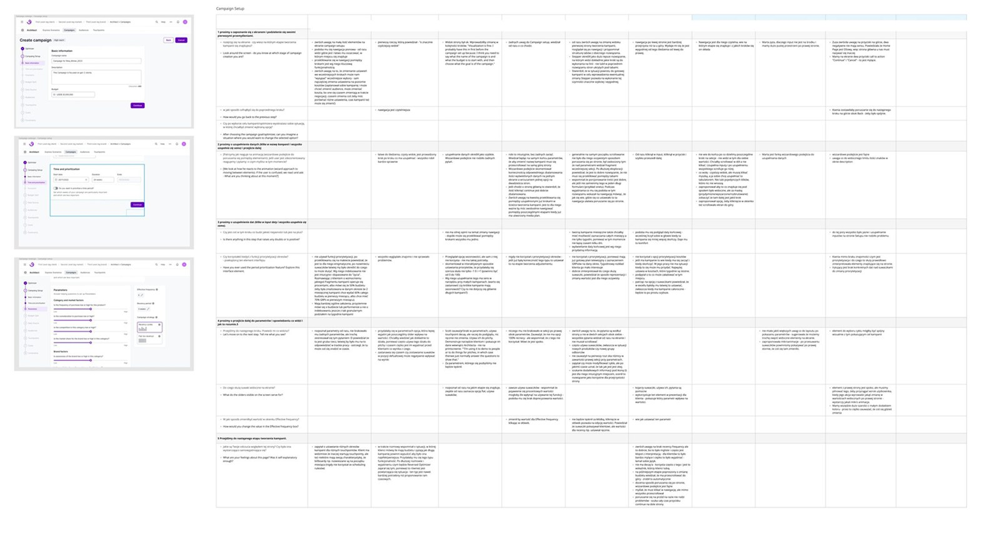
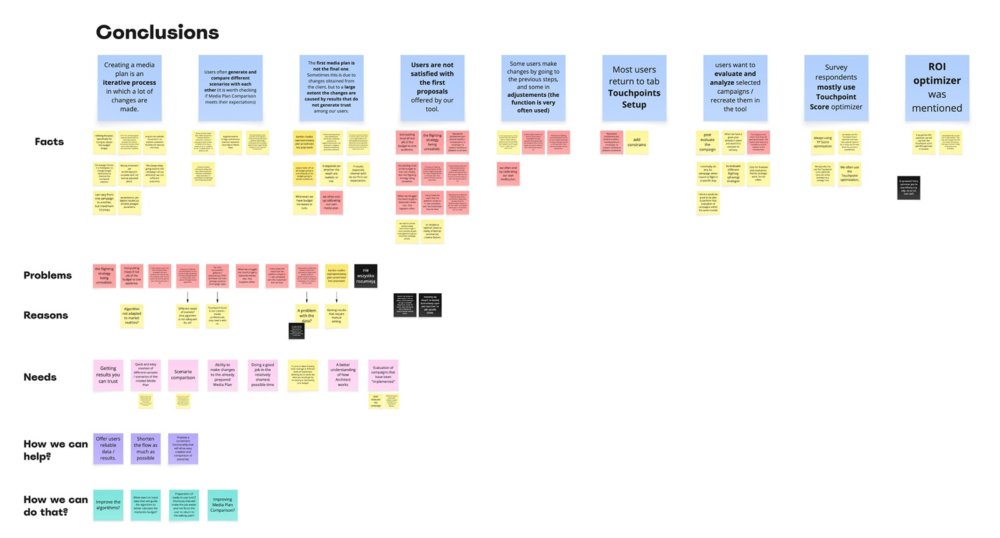
5. Handed over & built
Turned findings into a full handover package and stayed close to engineering through build.
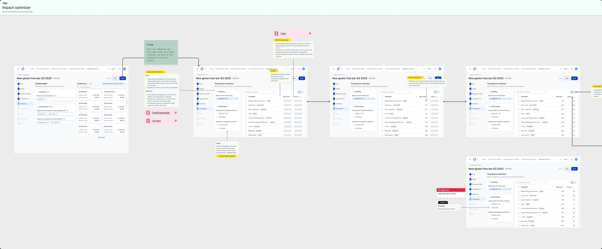
6. Defined success metrics, presented & kept listening
Before calling it done, I defined what success would actually look like and tracked it — alongside walking users through the changes directly and keeping the feedback loop open after launch, not just before it.
It takes a user no more than 6 minutes to set up a "typical" campaign.
Positive feedback from users across channels, and fewer bug-related tickets (Teams, sprint reviews, etc.).
Average score above 7.5.
80% of new users return to the app within 3 months.
Impact
What changed for the business — not just the screen.
- Campaign setup got 2× faster. A re-sequenced flow, data-informed defaults, and a backend that loads only what's needed — together, not any single fix.
- Fewer clicks, and no lost place mid-setup. The option people reached for most right after recalculating got its own step, in the right spot in the flow.
- Advanced settings stopped taxing everyone else. Options less-experienced planners never touched moved to a side panel or were marked optional — progressive disclosure instead of everything on by default.
- It became the reference other teams build from. As the company rolled out its new design system, our rebuild was the implementation teams looked to — the payoff for being trusted to go first.
Voice of users
A short readout from usability sessions — what worked, what to watch, what confused people, and what they asked for.
Good
- "Recency/Frequency is gone — good call. That parameter caused more confusion than it was worth; hard to explain to clients."
- "The vertical navigation on the left is so much better — easier to move through, and the order of steps is easier to follow."
- "The layout now is much clearer."
Watch outs
- "It wasn't obvious whether I can create these lists myself, or if they're set by default."
- "I couldn't tell you for sure what the difference between the optimizer names is — I think one's for communication goals, the other for reach."
Errors
- "At first I didn't read the adjustment numbers the way they were meant. After a quick walkthrough it clicked — and I thought it was a good solution."
- "Max Reach and Scores show up as separate charts — I decide based on both, so I'd rather see them together."
- "I didn't understand what 'Soft threshold' meant."
Opportunities
- Ready-made, editable audience templates would be a genuine time-saver.
- Sort campaigns by budget size.✓ Added
- Set investment periods per touchpoint — e.g. TV spend only for the first 20 weeks.✓ Added
Learnings
Learned to work inside a large, comprehensively-designed Design System for the first time — extending it consistently instead of working around it.
Staying close to engineering after handover, not just handing off and moving on, caught small gaps before they shipped.
Our research window landed in December/January — the hardest possible time to recruit participants. I'd plan around that risk earlier next time.
A year on, even I had to reconstruct the reasoning behind some calls. A lightweight decision log kept as I go would've saved me from re-deriving my own decisions later.
With this many iterations, Figma got messy fast. I've learned to clean up ideas that don't go anywhere right away instead of hoarding them "just in case."
Appendix
Before / After
Goal selection
Touchpoints
How I work
A year of this fits onto one page. The mechanics underneath — how I scope a study, script it, and turn sessions into decisions the team can act on — are written up on their own, with real artefacts.